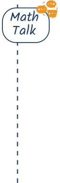
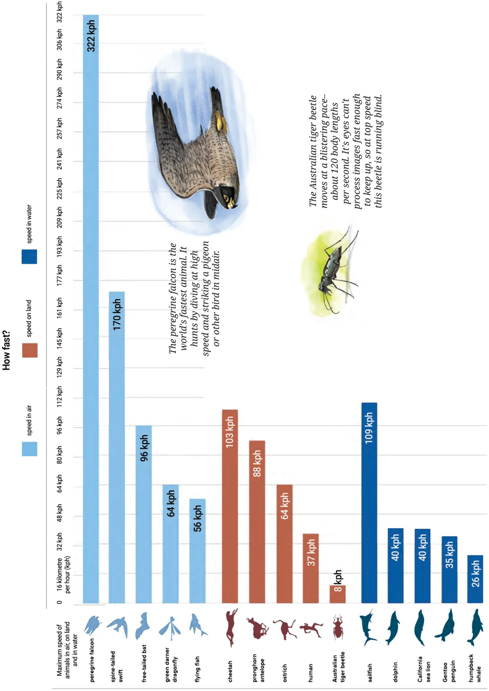
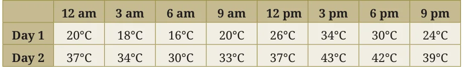
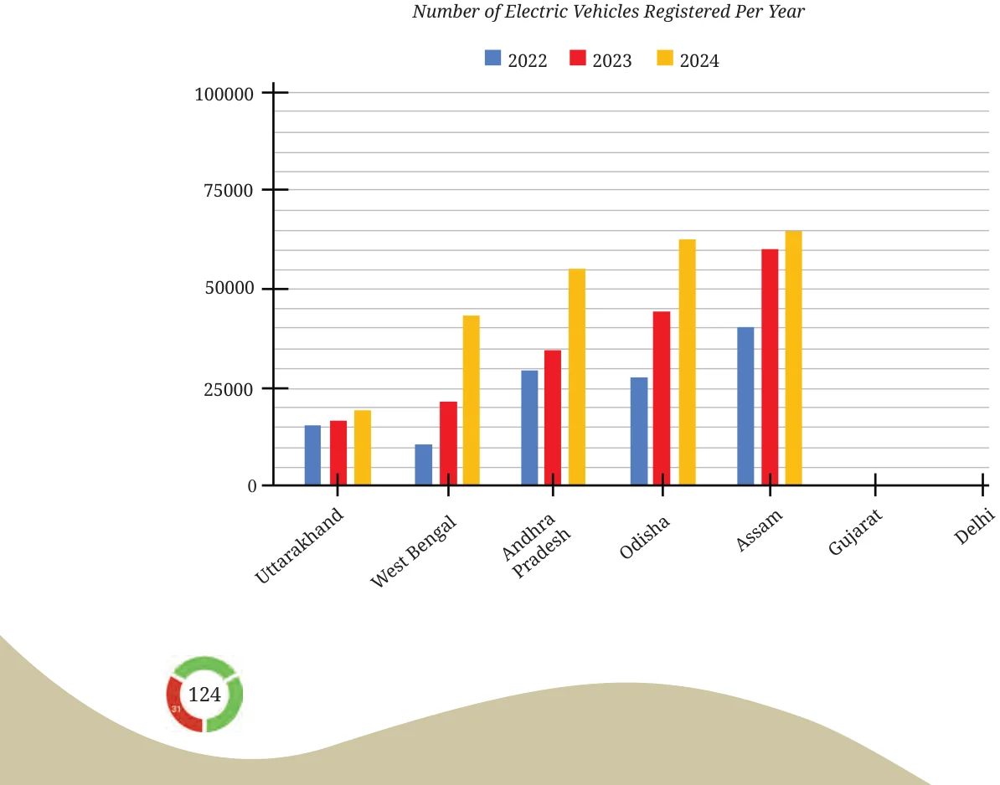
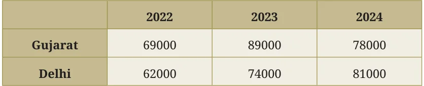

- The following infographic shows the speeds of a few animals in air, on land, and in water. Can we call this graph a bar graph?

- What is the scale used in this graph?
- What did you find interesting in this infographic? What do you want to explore further?
- Identify a pair of creatures where one's speed is about twice that of the other.
- Can we say that a sailfish is about 4 times faster than a humpback whale? Can we say that a sailfish is the fastest aquatic animal in the world?

- Preyashi asked her students 'If you were to get a super power to become aquatic (water-borne), aerial (air-borne), or spaceborne which one would you choose?'. The responses are shown below. Some chose none. Draw a double-bar graph comparing how both grades chose each option. Choose an appropriate scale.
- The temperature variation over two days in different months in Jodhpur, Rajasthan, is given below. Draw a double-bar graph. Use the scale 1 unit \(= 4 ^{\circ} C\). Can you guess which two months these days might belong to?

- The following clustered-bar graph shows the number of electric vehicles registered in some states every year from 2022 to 2024.

- The data (rounded-off to thousands) for the states of Gujarat and Delhi are given in the table below. Mark the corresponding bars on the bar graph.

- Notice how the graph is organised, what scale is used, and what patterns the data shows.
- How would you describe the change for various states between 2022 and 2024?
- Approximately how many more registrations did Assam get in 2023 compared to 2022?
- How many times more did the registrations in West Bengal increase from 2022 to 2024?
- Is this statement correct — 'There were very few new registrations in Uttarakhand in 2023 and 2024, as the increase in the bar lengths is minimal'?
- The data (rounded-off to thousands) for the states of Gujarat and Delhi are given in the table below. Mark the corresponding bars on the bar graph.
Chapter 5 · Connecting the Dots